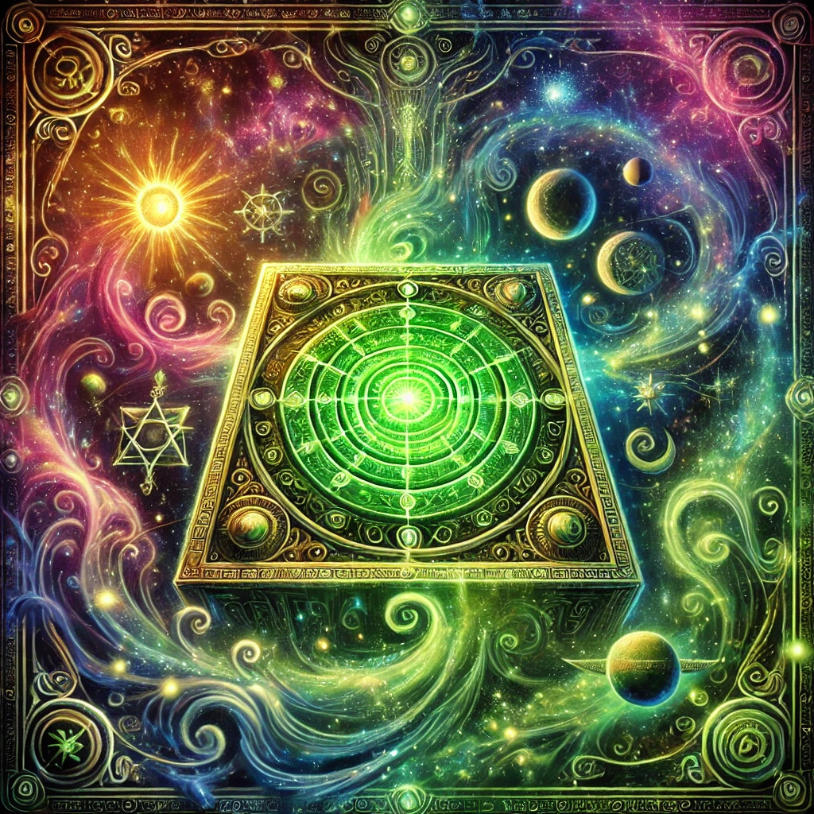
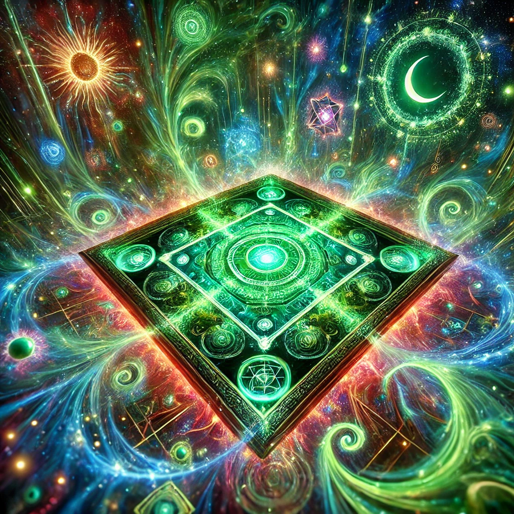
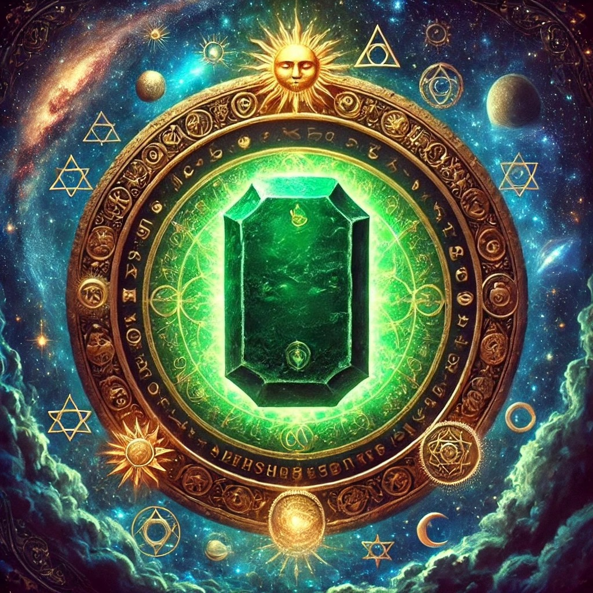
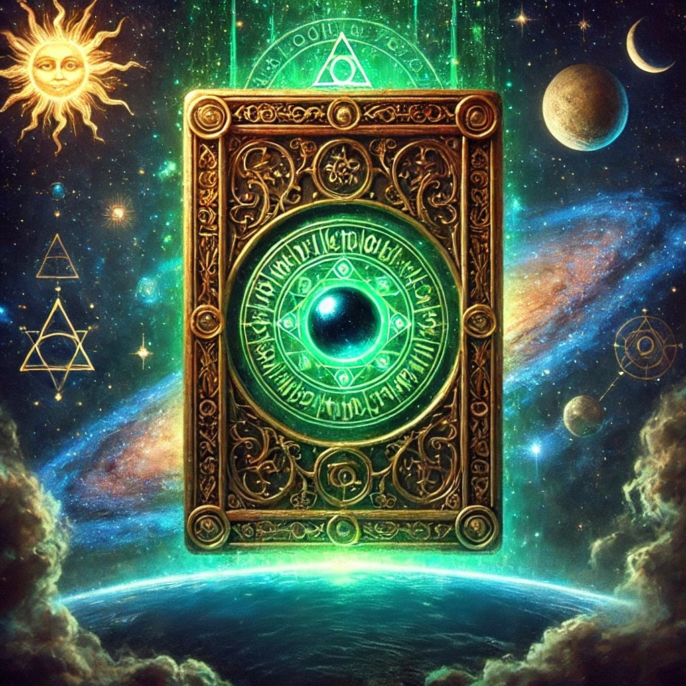
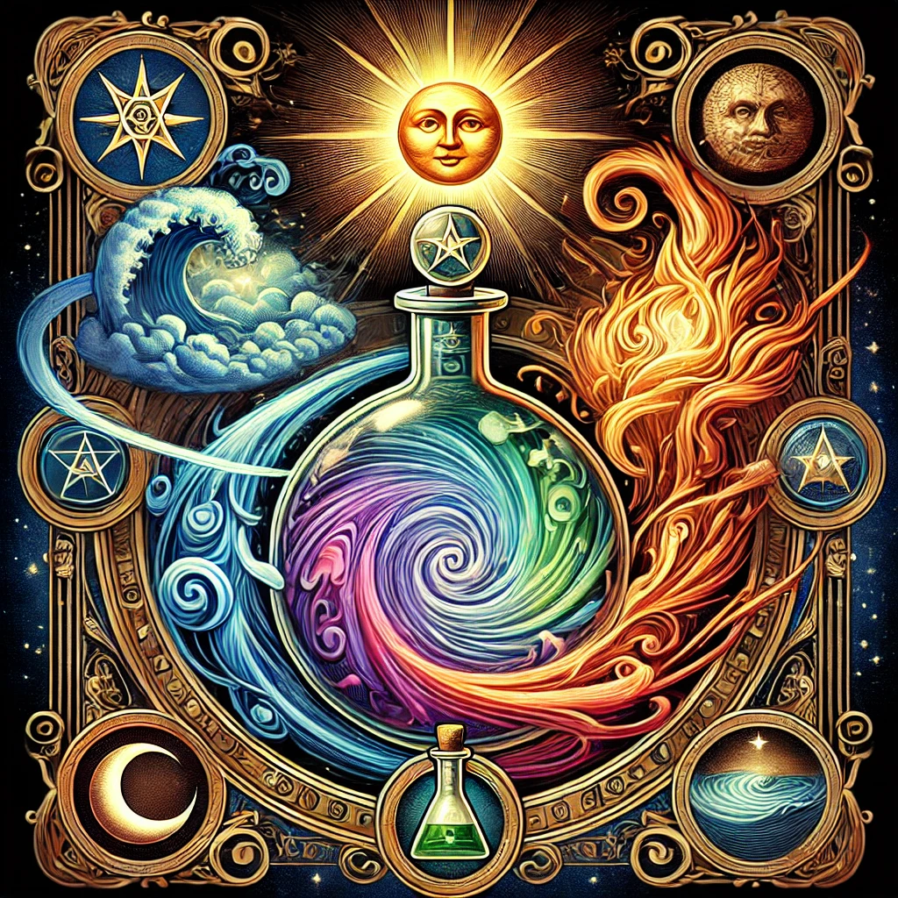
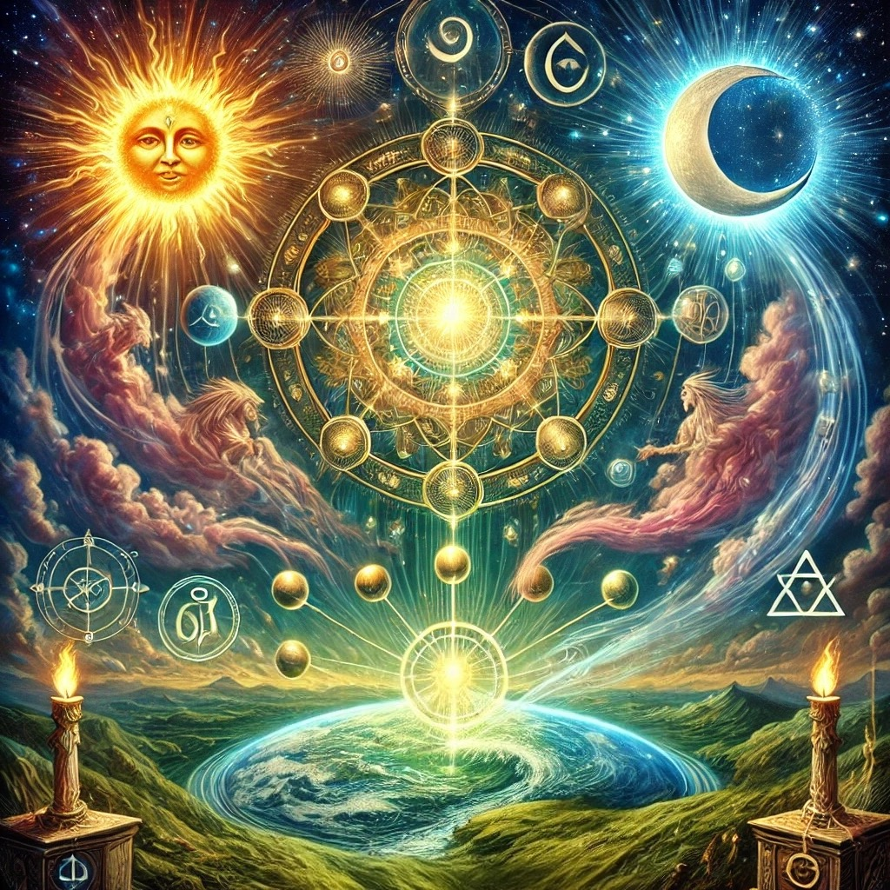
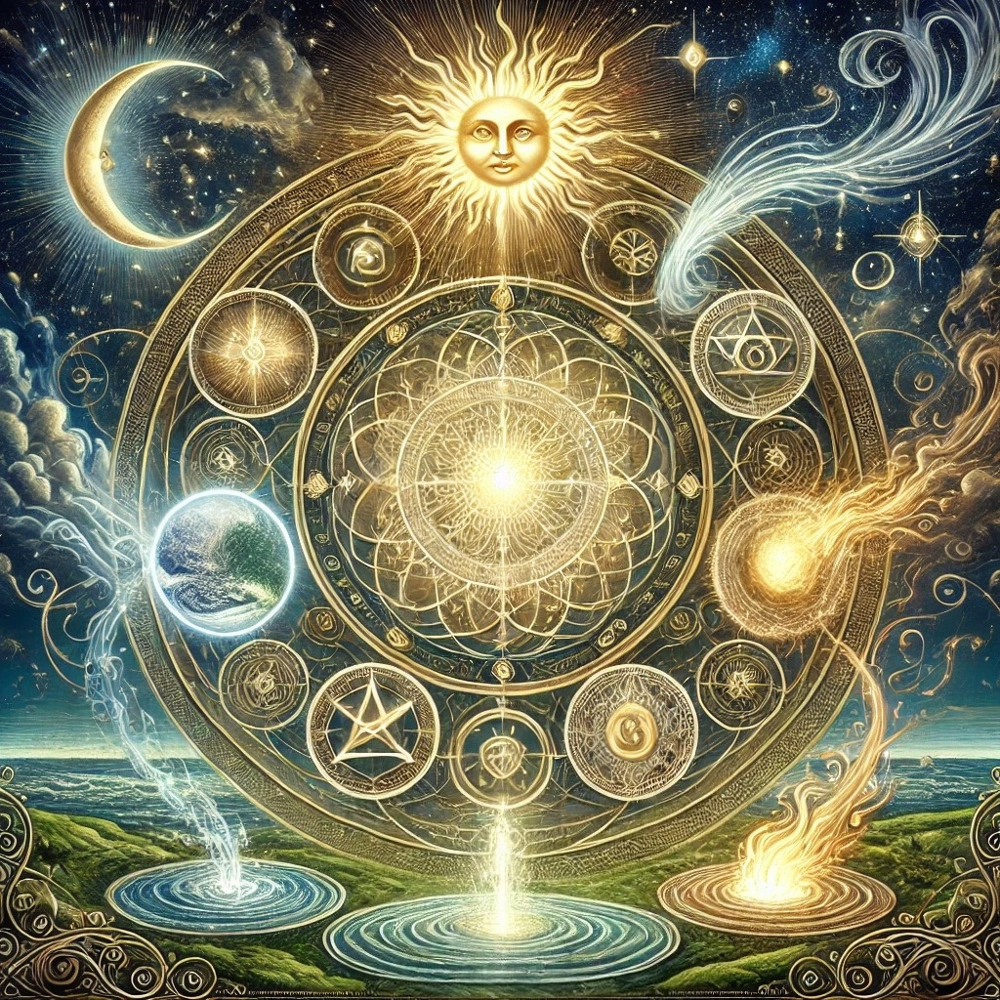

The Emerald Tablet: A Thorough Exploration Introduction and Historical Context
The Emerald Tablet—also known as the Tabula Smaragdina or Smaragdine Tablet—is one of the most revered and enigmatic texts in the Western esoteric tradition.
Commonly attributed to Hermes Trismegistus, a figure conceived as a synthesis of the Egyptian god Thoth and the Greek god Hermes, this brief yet profound document has captivated alchemists, philosophers, and mystics for over a millennium.
Although shrouded in legend, references to the Emerald Tablet first appear in Arabic sources from the 6th to 8th centuries CE.
One of the earliest mentions occurs in a work attributed to Balinas (Pseudo-Apollonius of Tyana), titled Kitāb Sirr al-Ḥalīqa wa-ṣ-ṣanʿa aṭ-ṭabīʿiyya (“The Secret of Creation and the Art of Nature”).
It is believed that Balinas discovered the text inscribed on a tablet of emerald (or green stone) within a vault—thus giving rise to the mythology surrounding its material origin.
However, scholarly debate continues regarding the literal existence of such a stone tablet, as many posit it to be a symbolic device illustrating hidden alchemical truths.
By the 12th century, the text had been translated into Latin by figures such as Hugh of Santalla, Johannes Hispalensis, and Gerard of Cremona, appearing in alchemical compilations including the Liber de Compositione Alchemiae and the so-called Secretum Secretorum.
These Latin translations sparked widespread interest in medieval Europe, influencing Roger Bacon, Albertus Magnus, and later Renaissance luminaries.
By the 15th and 16th centuries, the Emerald Tablet was esteemed as a foundational text in the burgeoning Western alchemical tradition, studied by notable adepts like Paracelsus, Heinrich Cornelius Agrippa, and eventually Isaac Newton in the 17th century.

Content and Core Passages The Emerald Tablet itself is remarkably brief—often rendered as anywhere from eight to fourteen lines—yet it encompasses dense layers of symbolism.
Its most famous maxim, “As above, so below”, conveys the doctrine of cosmic correspondence, suggesting that the operations of the macrocosm (the universe) are mirrored in the microcosm (humans and earthly nature). Key themes drawn from its various translations include:
1. Unity of All Things
• The Tablet repeatedly refers to a single cosmic source, sometimes called the “One Thing” or Prima Materia, from which all diversity unfolds and to which all is ultimately returned.
2. Alchemical Process
• Descriptions of purifying, separating, and recombining elements hint at the alchemical opus, or Great Work: calcination, dissolution, separation, conjunction, fermentation, distillation, and coagulation.
• Lines exhorting readers to “separate the subtle from the gross” and to let the matter “ascend from earth to heaven and again descend to earth” describe the cyclical transformation processes central to alchemy.
3. Spiritual Enlightenment
• Beyond its material instructions for transmutation (i.e., turning “base metals into gold”), many interpreters see the Tablet as a metaphor for inner regeneration.
The references to the Sun (father) and Moon (mother) are read as archetypes of consciousness and subconscious, or spirit and soul, indicating the unification of polarities within the adept.
4. Creative Power and Gnosis
• The text claims that by mastering these principles, one achieves “the glory of the whole world,” dispels obscurity, and participates in ongoing cosmic creation.
Such language suggests the initiatic quest for gnosis, or direct knowledge of the divine.

Influence on Alchemy and Hermeticism
From the medieval era through the Renaissance, the Emerald Tablet served as a cornerstone of alchemical philosophy.
Alchemists, convinced that it contained the key to producing the philosopher’s stone and the elixir of life, sought to decode its cryptic language through esoteric commentaries.
Ortulanus (14th century) wrote a pioneering Latin commentary, while later figures, such as the Catalan mystic Ramon Llull (often associated—rightly or wrongly—with alchemical pursuits) used its central motifs in their own treatises.
The Tablet’s succinct revelation of cosmic unity and transformation also made it emblematic of Hermeticism—the broader spiritual philosophy derived from the Hermetic Corpus (e.g., the Poimandres).
In Hermetic thought, the universe is a living organism infused by a divine Mind, and humanity, as a reflection of this cosmic order, possesses the latent ability to ascend toward higher states of being.
The principle “As above, so below” undergirds many esoteric traditions beyond alchemy, including Kabbalah, Gnosticism, Rosicrucianism, and various forms of Western occultism.
Notable Commentaries and Interpretations
1. Roger Bacon (13th Century)
• Although not a direct commentator on the Tablet itself, Bacon’s pursuit of experimental science under a quasi-alchemical framework reveals his acceptance of Hermetic principles in investigating nature.
2. Paracelsus (16th Century)
• A physician-alchemist who used Hermetic and Neoplatonic ideas in his medical treatises, Paracelsus saw the emerald formula as guiding the spiritual and physical aspects of healing and transformation.
3. Isaac Newton (17th Century)
• The renowned mathematician and physicist studied alchemical texts extensively. In his manuscripts (now preserved at institutions like King’s College, Cambridge), Newton penned translations of the Emerald Tablet and sought to reconcile Hermetic concepts with his nascent scientific theories.
4. Carl Jung (20th Century)
• The Swiss psychiatrist was fascinated by alchemy as a metaphor for individuation, the process of integrating the conscious and unconscious.
In works like
Psychology and Alchemy, Jung references the Emerald Tablet to explain how alchemical imagery expresses psychological and spiritual transformation.

Modern Cultural and Esoteric Impact
In contemporary esoteric and New Age circles, the Emerald Tablet still functions as a touchstone for those exploring alchemy, Hermetic Qabalah, ceremonial magic, and holistic spirituality.
The phrase “As above, so below” persists as a popular slogan in occult and metaphysical communities, symbolizing the interplay between personal experience and universal forces.
The Tablet’s intriguing narrative—surrounded by legends of hidden tombs, emerald inscriptions, and divine revelations—continues to inspire literary and artistic treatments, from fantasy fiction to conceptual art.

Resources and References
• Primary Texts / Translations
• Kitāb Sirr al-Ḥalīqa (Balinas/Pseudo-Apollonius)
• Gerard of Cremona’s Latin translation in various 12th-century alchemical anthologies
• Hermetica: The Greek Corpus Hermeticum (trans. Brian P. Copenhaver)
• The Golden Tract (various 16th-century Hermetic treatises)
• Scholarly Studies
• Julius Ruska, Tabula Smaragdina: Ein Beitrag zur Geschichte der hermetischen Literatur (1926)
• E.J. Holmyard, Alchemy (1957)
• Frances A. Yates, Giordano Bruno and the Hermetic Tradition (1964)
• Carl Gustav Jung, Psychology and Alchemy (Collected Works Vol. 12)
• Titus Burckhardt, Alchemy: Science of the Cosmos, Science of the Soul (1960)
• Further Reading
• Newton and the Hermetic Tradition, various articles in the journal Ambix
• Alchemy and Mysticism by Alexander Roob

Conclusion
Despite its brevity, the Emerald Tablet has exerted an outsized influence upon the evolution of alchemy, Hermetic thought, and Western esotericism.
Across centuries of interpretation—ranging from the laboratories of medieval alchemists to the psychological frameworks of modern Jungians—this small text has served as a touchstone for exploring the mysteries of creation, the relationship between human consciousness and the cosmos, and the transformative potential of gnosis.
Its timeless maxims, distilled into lines such as “As above, so below,” continue to spark new generations of seekers, each endeavoring to uncover the hidden “miracles of the One Thing” within and without.

End of the Emerald Tablet Exploration
All the information above has been presented verbatim to ensure no detail or nuance has been omitted or altered.
This remarkable text—credited to Hermes Trismegistus, echoing the wisdom of Thoth—has woven itself through centuries of alchemical endeavors, Hermetic philosophy, and esoteric intrigue.
Its legacy stands as a testament to humankind’s enduring pursuit of knowledge, transformation, and unity with the cosmos—an endeavor symbolized in the concise yet resonant phrase “As above, so below.”